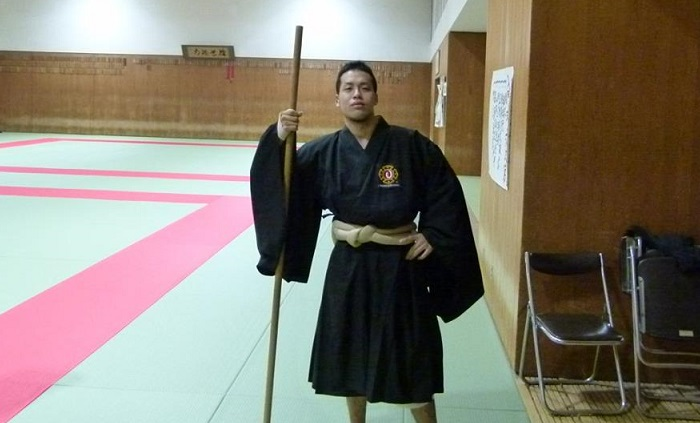

京都大学体育会少林寺拳法部
新入生へ

新歓練習
| 月 | 午後7:00〜9:00 | 体育館第二武道場 |
| 木 | 午後5:00〜7:00 | 体育館第二武道場 |
| 金 | 午後7:00〜9:00 | 体育館第一武道場 |
で新歓練習実施中です！
新入生の皆さんへ
新入生の皆さん、ご入学おめでとうございます！
「大学から新しいことを始めてみたい」「せっかくだから為になる技術を身につけたい」「けど、大学の運動部って何だか気後れする…」という、そこのあなたには少林寺拳法部がオススメです！
部員のほとんどが大学から少林寺拳法を始めており、中には運動部未経験だった女性もいますが、今ではバリバリ活躍しているので、気後れすることは一切ありません。
我が部は、もちろん授業優先ですし、バイトや他の課外活動との掛け持ちも出来ます。おまけに長期休暇は合宿を除き基本的に自主練なので、時間の使い方には幅があります。
実際にどんな練習をしているのか、どんな競技を行っているのかと興味が湧いた方は、このHPの「活動内容」などの項目も見てみてください。
そして、是非とも一度、道場に見学にいらしてください。「百聞は一見にしかず」ですよ！
上回生、留学生の方々も大歓迎ですし、一年中いつでも新入部員を募集しているので、気軽に覗きに来てください。
皆さんに逢えるのを楽しみにしています！